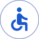

Observar
Analizamos necesidades de orientación, movilidad y acceso a información relevante para participantes y visitantes.
BASTIÁN ARAVENA
ORTIZ
Plataforma web inclusiva para los Juegos Parapanamericanos 2023, diseñada para entregar información actualizada sobre accesibilidad, rutas y servicios, facilitando la movilidad autónoma de competidores y visitantes.

Proyecto enfocado en la experiencia de participantes chilenos y extranjeros durante los Parapanamericanos 2023.
Investigación UX, Arquitectura de información, UX/UI Design y prototipado en Figma.
3 semanas
Figma y Miro
Existía escasez de información clara y actualizada sobre servicios públicos y privados, además del nivel de inclusión de distintas instalaciones.
Esto dificultaba planificar desplazamientos y explorar el entorno con mayor autonomía.
¿Cómo podríamos reunir información útil sobre accesibilidad, rutas, calidad del suelo, horarios punta y puntos de interés en una experiencia simple, clara y fácil de consultar?
Analizamos necesidades de orientación, movilidad y acceso a información relevante para participantes y visitantes.

Definimos categorías, jerarquías y flujos para estructurar la información de forma fácil de consultar.

Tradujimos la estructura en una web móvil clara, visualmente limpia y centrada en la accesibilidad.
Categorías simples, lenguaje directo y navegación guiada para encontrar información rápidamente.

Priorización de información sobre rampas, calidad del suelo y nivel de inclusión de espacios.
Mapas, rutas y referencias contextuales para apoyar desplazamientos más autónomos.